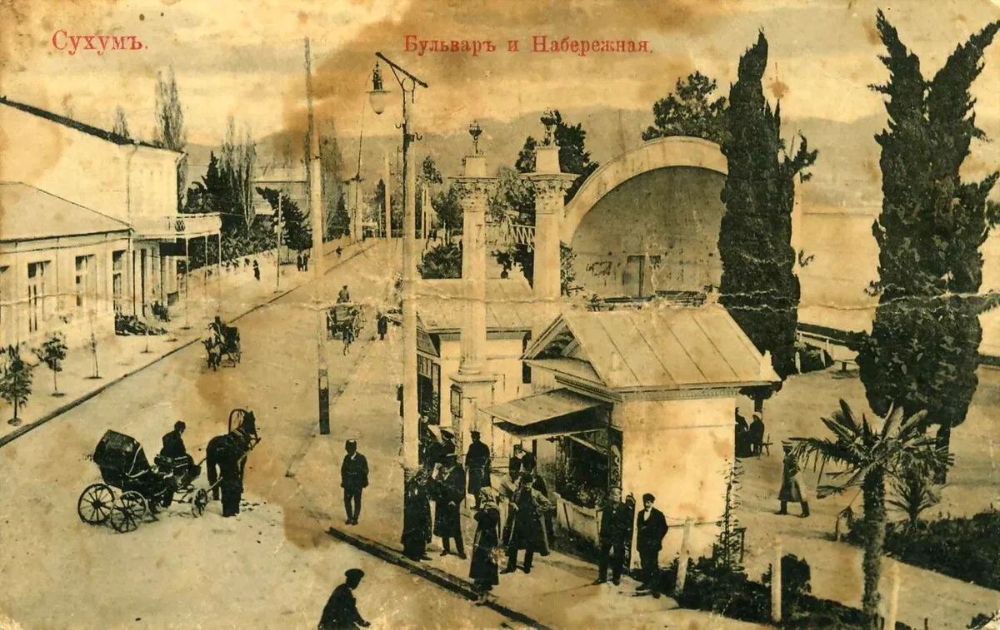

ჩვენს წელთაღრიცხვამდე IX-VI საუკუნეებში თანამედროვე აფხაზეთის ტერიტორია ძველი ქართული კოლხეთის სამეფოს შემადგენლობაში შედიოდა. ჩვენს წელთაღრიცხვამდე VI საუკუნეში ბერძნებმა დააარსეს სავაჭრო კოლონიები დღევანდელი აფხაზეთის შავი ზღვის სანაპიროზე, კერძოდ პიტიუნტსა და დიოსკურიაში. კლასიკურმა ავტორებმა აღწერეს რეგიონში მცხოვრები სხვადასხვა ხალხი და ენების დიდი რაოდენობა, რომლებზეც ისინი საუბრობდნენ. არიანემ, პლინიუსმა და სტრაბონმა აბასგოი და მოსჩოის ხალხების შესახებ ცნობები მოიტანეს სადღაც თანამედროვე აფხაზეთში, შავი ზღვის აღმოსავლეთ სანაპიროზე. ეს რეგიონი შემდგომში შთანთქა 63 წელს ლაზიკის სამეფოში.არაბული ხალიფატის წინააღმდეგ წარმატებულმა თავდაცვამ და აღმოსავლეთში ახალმა ტერიტორიულმა მიღწევებმა აბასგის მთავრებს საკმარისი ძალა მისცა ბიზანტიის იმპერიისგან მეტი ავტონომიის მოთხოვნით. დაახლოებით 778 წლისთვის უფლისწულმა ლეონ II-მ ხაზარების დახმარებით გამოაცხადა დამოუკიდებლობა ბიზანტიის იმპერიისგან და რეზიდენცია ქუთაისს გადასცა. ამ პერიოდში ქართულმა ენამ შეცვალა ბერძნული, როგორც წერა-კითხვისა და კულტურის ენა. დასავლეთ ქართული აფხაზეთის სამეფო აყვავებული იყო 850-950 წლებში, რაც დასრულდა აფხაზეთისა და აღმოსავლეთ საქართველოს სახელმწიფოების გაერთიანებით ერთიანი ქართული მონარქიის ქვეშ, რომელსაც მართავდა მეფე ბაგრატ III X საუკუნის ბოლოსა და XI საუკუნის დასაწყისში. XII საუკუნეში მეფე დავით აღმაშენებელმა აფხაზეთის ერისთავად ოთაღო დანიშნა, რომელიც შემდგომში შერვაშიძის სახლის დამაარსებელი გახდა.1240-იან წლებში მონღოლებმა საქართველო დაყვეს რვა სამხედრო-ადმინისტრაციულ სექტორად (დუმანებად). თანამედროვე აფხაზეთის ტერიტორია ცოტნე დადიანის მიერ მართული დუმანის ნაწილი იყო.
